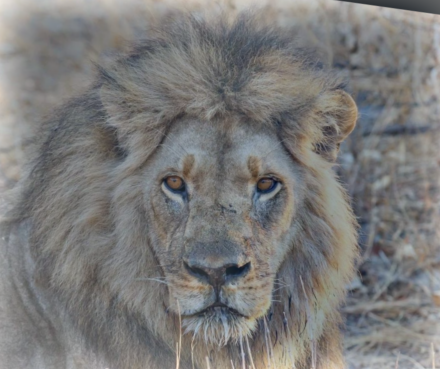

Project 2: Fun with Filters and Frequencies!
Project Overview
This project implements a variety of filters and frequency-based operations on images, including convolutions, Gaussian blur, Laplacian, image sharpening, image blending, etc..
Part 1.1: Convolutions from Scratch
This part implements the convolution operation from scratch using 4 for-loops and 2 for-loops. The boundaries are padded with zeros, and the output images are ensured to be the same size as the input image using np.pad. This gives the same result as the output from scipy.signal.convolve2d. However, the runtimes of them are significantly different. The 4-for-loop convolution is much slower than the 2-for-loop convolution, which is still much slower than the scipy.signal.convolve2d (possibily because of the internal optimization in existing libraries).
The following images are the results of applying the convolution operation to the selfie image using 9x9 box filter, finite difference operator Dx, and finite difference operator Dy. The 2-for-loop convolution is much faster than the 4-for-loop convolution, and the results are the same. Each of the convolution is only presented once for the sake of brevity; results from all three implementations are the same and can be found in the notebook submission.
def convolve_4_for(image, filter):
image_height, image_width = image.shape
filter_height, filter_width = filter.shape
h_pad_size, v_pad_size = filter_height - 1, filter_width - 1
padded_image = np.pad(image, ((h_pad_size, h_pad_size), (v_pad_size, v_pad_size)))
convolved_image = np.zeros((image_height + 2 * h_pad_size - filter_height + 1, image_width + 2 * v_pad_size - filter_width + 1))
for i in range(padded_image.shape[0] - filter_height + 1):
for j in range(padded_image.shape[1] - filter_width + 1):
sum = 0
for fi in range(filter_height):
for fj in range(filter_width):
sum += padded_image[i + fi, j + fj] * filter[fi, fj]
convolved_image[i, j] = sum
return convolved_image
Implementation of 4-for-loop convolution
def convolve_2_for(image, filter):
image_height, image_width = image.shape
filter_height, filter_width = filter.shape
h_pad_size, v_pad_size = filter_height - 1, filter_width - 1
padded_image = np.pad(image, ((h_pad_size, h_pad_size), (v_pad_size, v_pad_size)))
convolved_image = np.zeros((image_height + 2 * h_pad_size - filter_height + 1, image_width + 2 * v_pad_size - filter_width + 1))
for i in range(padded_image.shape[0] - filter_height + 1):
for j in range(padded_image.shape[1] - filter_width + 1):
region = padded_image[i:i + filter_height, j:j + filter_width]
convolved_image[i, j] = np.sum(region * filter)
return convolved_image
Implementation of 2-for-loop convolution
| 9x9 Box Filter |
4-for-loop |
2-for-loop |
scipy.signal.convolve2d |
| Time |
7.78s |
0.85s |
0.03s |
Runtime of the convolution function with different implementations
Part 1.2: Finite Difference Operator
This part introduces the finite difference operator, which is a discrete approximation of the gradient operator. The magnitude of gradient is calculated with the partial derivative of the image in the x and y directions. The image is then binarized, and the threshold is chosen based on a sweep of the threshold values. The GIF is included to visualize the hyperparameter sweep. The final threshold is chosen to be 80, which shows most parts of the edges and removes most of the noise.

Original Image

Horizontal Edges (Dy)

Vertical Edges (Dx)

Gradient Magnitude
Binarized and Thresholded (threshold=80)

Threshold Animation
Part 1.3: Derivative of Gaussian (DoG) Filter
The results from the finite difference operators are rather noisy. Recalling from the lecture, we can smooth the image with a Gaussian filter and then apply the finite difference operator to the smoothed image. Fortunately enough, convolution is associative, so we can convolve the derivitives with the gaussian filter first, and then convolve them with the original image.
The results of the edges from the DoG filters are much cleaner and smoother than the results from the finite difference operators, with less noise in the background.
As I increase alpha from 3 to 10, the images are getting sharper as there are more clear edges. However, making alpha too large will lead to a noisy background, as shown in the images with alpha=10.

Derivative of Gaussian Dx
Derivative of Gaussian Dy

Original Image

DoG Gradient Magnitude

DoG Horizontal Edges
Part 2.1: Image "Sharpening"
This part of the project implements the unsharp mask filter to sharpen images. To sharpen an image, we want to emphasize more on the high-frequency components. Therefore, we can manually add the high frequencies to the original image. To get the high frequencies, we can substract the gaussian-blurred (low-pass filtered) image from the original image. Note that since convolutions are commutative and associative, we can combine the operations into a single convolution with the unsharp mask filter. The following images are the results of applying the unsharp mask filter to the original image and some intermediate outputs. There is also a hyperparameter alpha to control the strength of the sharpening. The larger the alpha, the more high-frequency components are added to the original image. Below is a formula that explains the unsharp mask filter.
Note that the high frequencies are quite noisy, so I normalized the high frequencies to make sure they are visually appealing.
As I increase alpha from 3 to 10, the images are getting sharper and the edges are clearer. However, making alpha too large will lead to a noisy background, as shown in the images with alpha=10.

Original Taj

Sharpened Taj (alpha=10)
Normalized High Freq Chelsea
Sharpened Chelsea (alpha=3)
Sharpened Chelsea (alpha=10)
Part 2.2: Hybrid Images
This part of the project implements the hybrid images, which is a combination of the low-pass filtered image and the high-pass filtered image. The low-pass filtered image is obtained by convolving the image with a Gaussian filter, and the high-pass filtered image is obtained by subtracting the low-pass filtered image from the original image. The rationale behind this is that human's perception of different frequencies varies at different distances. when looking close up, humans are more likely to perceive the high frequencies, whereas when we stand further, we are more likely to preceive the low frequencies and ignore the high frequencies.
The following images are some examples of hybrid images, including Derek and Nutmeg, the Chelsea Munich Football Club, and the tigerlion.

Derek Original

Cat Original

Chelsea Logo Original

Lion High Frequencies
We now analyze the frequency spectrum for the first set of images (Derek and Nutmeg). We can see that passing the Derek image through a Gaussian filter significatnly removes the high frequencies and only keeps the low frequencies in the center of the spectrum. On the other hand, passing the Nutmeg image through a Laplacian filter removes part of the low frequencies, resulting in a darker area in the center compared to the specturm of the original Nutmeg image. The final resulting spectrum of the hybrid image is the result of simply adding up the two filtered frequency spectra, which means the resulting image has the high frequencies from the Nutmeg image and the low frequencies from the Derek image.
Part 2.3: Gaussian and Laplacian Stacks & Part 2.4: Multiresolution Blending
This part of the project implements the Gaussian and Laplacian stacks. To create a Gaussian stack, we can keep convolving the last image of the stack with a Gaussian filter and putting the result in the next position of the stack. To create a i-th image in the Laplacian stack, we can take the difference between the i-th image and the (i+1)-th image in the Gaussian stack to get the specific band of frequencies. The last image in the Laplacian stack is the also the last image in the Gaussian stack: this level stores the lowest frequencies of the image and makes sure that we can get the original image back by adding up all the images in the Laplacian stack.
Below is the Gaussian stack and Laplacian stack for both the apple and the orange image. Note that for the Laplacian stacks, the images are normalized to make them visually appealing; the colors are therefore not accurate and won't align with the exact color from the project page.
Apple Gaussian Stack

Level 0
Apple Laplacian Stack

Level 0

Level 1

Level 2

Level 3

Level 5
Orange Gaussian Stack

Level 0

Level 1

Level 2

Level 3

Level 5
Orange Laplacian Stack

Level 0

Level 2

Level 3

Level 4

Level 5
Apple Left Laplacian Stack (for blending)
Orange Right Laplacian Stack (for blending)
Oraple (Blended) Stack
Oraple!

Apple Left

Orange Right
The following image is a blend between a soccer ball and a watermelon, using the same left/right mask we used for oraple. Let's call it a soccer-melon.
The following two images are blended with a irregular mask. The masks are shown below. The intended effect is to move Monet's painting (Woman with a Parasol) to the real world.

Woman with a Parasol
Mask for Woman with a Parasol